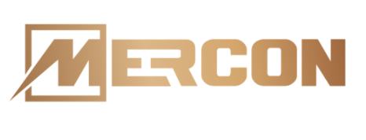
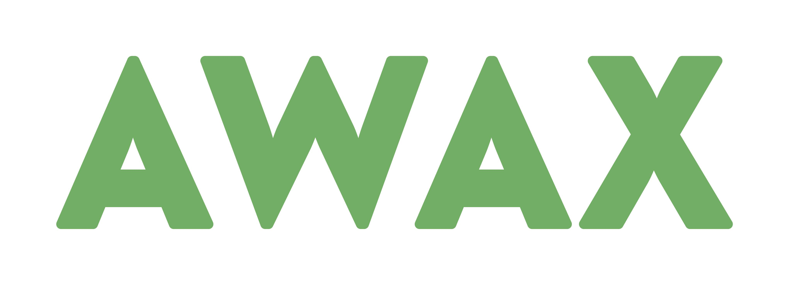
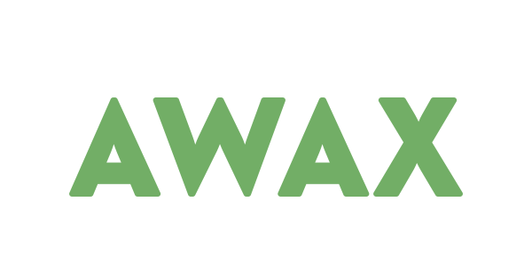

01
Specializované služby pro průmysl
B:TECH a MERCON dodávají průmyslovou automatizaci, robotizaci, elektrické pohony, MaR a silnoproudé elektroinstalace pro zákazníky v Česku i zahraničí.
zkušeností v průmyslu, energetice a správě aktiv
průmyslové služby, energetika, nemovitosti a investice
pronajímaných výrobních, skladových a kancelářských prostor
fotovoltaická elektrárna v portfoliu skupiny
Vize skupiny
TALERON rozvíjí byznysy, kterým rozumí provozně i investičně. Nechceme stavět sdělení na velkých slibech ani na pomíjivých trendech. Důležitější je pro nás kontinuita, schopnost přebírat odpovědnost a kuráž posouvat jednotlivé společnosti krok za krokem.
Dlouhodobý přístup
Skupina aktivně pracuje s portfoliem, řídí jednotlivé pilíře a klade důraz na stabilitu, přiměřené riziko a dlouhodobou přítomnost v oborech, kterým rozumí.
Čtyři oblasti
B:TECH a MERCON dodávají průmyslovou automatizaci, robotizaci, elektrické pohony, MaR a silnoproudé elektroinstalace pro zákazníky v Česku i zahraničí.
Skupina provozuje fotovoltaickou elektrárnu a rozvíjí projekty pro podpůrné služby výkonové rovnováhy a lokální distribuční soustavy.
B:PARK rozvíjí a provozuje vlastní průmyslové areály v Havlíčkově Brodě, Přerově a Ždírci nad Doubravou.
TALERON Investment spravuje volné finanční prostředky skupiny a financuje rozvojové projekty v rámci portfolia.
Portfolio
Dodavatel průmyslové automatizace, robotizace, řízení budov a servisní podpory 24/7. Na trhu působí od roku 2000.
btech.cz
Elektroinženýrské projekty, MaR, automatizace, frekvenční měniče a servis pro průmyslové provozy s více než 30 lety zkušeností.
mercon.czDevelopment a dlouhodobý provoz průmyslových areálů. Portfolio zahrnuje 6 lokalit a další připravované prostory k pronájmu.
bpark.pro
Projekt fotovoltaické elektrárny o výkonu 913 kWp uvedené do provozu v roce 2010.

Provoz lokálních distribučních soustav v průmyslových areálech a služby výkonové rovnováhy pro ČEPS.
awax.czSpráva volných finančních prostředků skupiny a financování rozvojových projektů uvnitř portfolia.
Manažerské, finanční, IT a provozní služby pro společnosti skupiny, včetně podpory digitalizace interních procesů.
Stabilita a růst
Od technického řešení přes energetiku až po průmyslový areál: TALERON propojuje obory, které se vzájemně podporují a dávají skupině pevnější základ pro další rozvoj.
Kontakt
U Borové 69, 580 01 Havlíčkův Brod